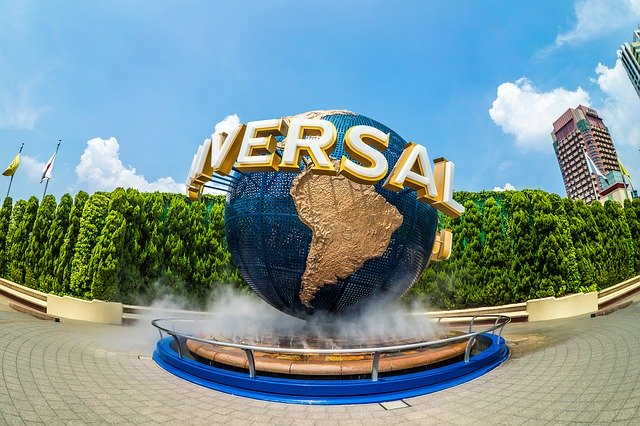
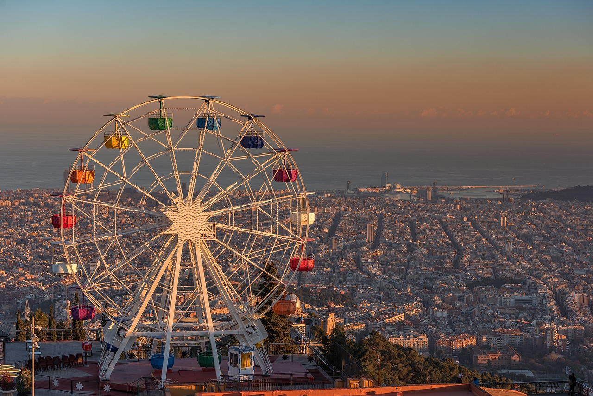
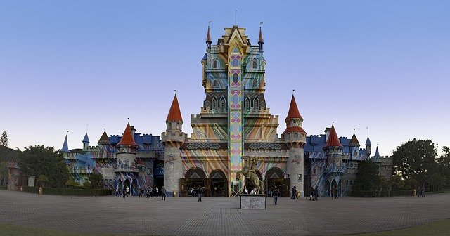

Orlando — Estados Unidos
A região reúne parques temáticos, atrações aquáticas, hotéis e restaurantes. Reserve tempo para deslocamentos e pausas.

Diversão em família
Planeje o ritmo do passeio e escolha as atrações que mais combinam com seu grupo.
Dicas de viagem
Ideias inspiradas no conteúdo original do projeto, revisadas para leitura e planejamento.

A região reúne parques temáticos, atrações aquáticas, hotéis e restaurantes. Reserve tempo para deslocamentos e pausas.

Parques brasileiros oferecem atrações para várias idades. Confira calendário, regras e acessibilidade antes da visita.
Ingressos, horários, transporte e atrações podem mudar. Consulte sempre os canais oficiais dos parques antes de viajar.
← Voltar para dicas de viagem